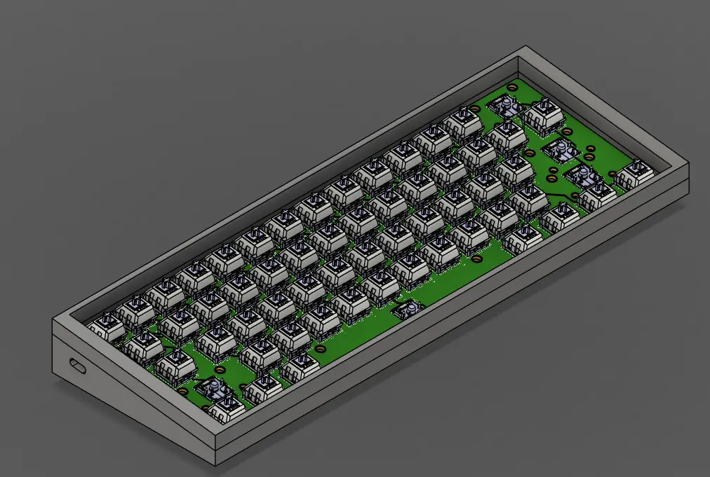
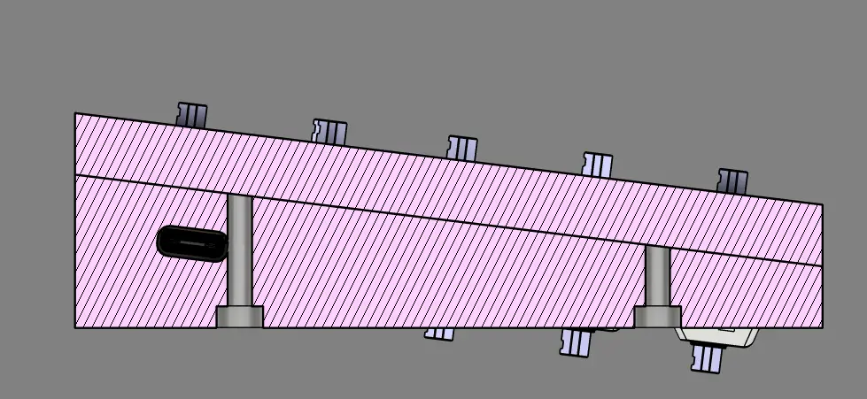
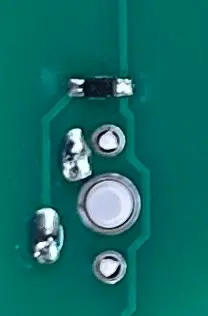
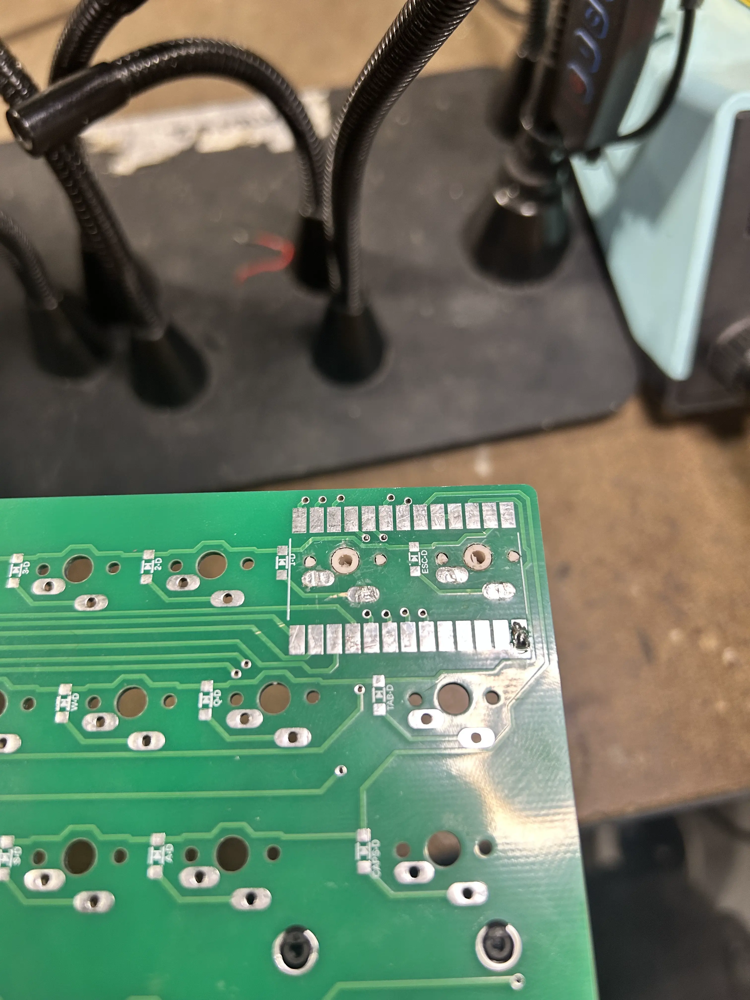
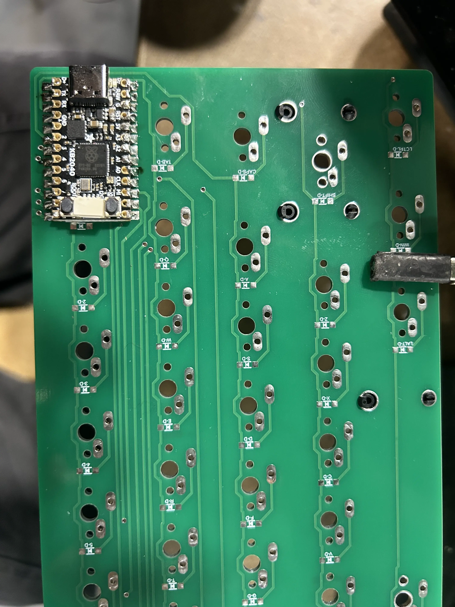
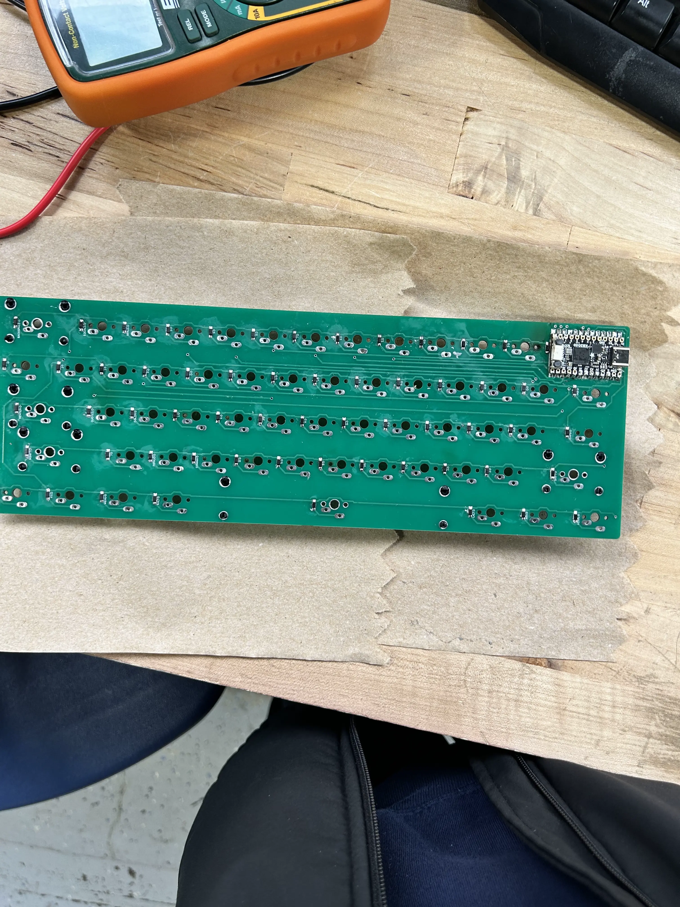

junior week jan. 8, 2026
happy late new years
pre-break work
got some work on the case done, and also got some help from tim with designing the case.

probably not the final design, still a wip
while i deviated away from the silicone bowl design, tim thought of a design which uses leaf springs and the top plate to secure the pcb.
also, to mount the top and bottom cases together, i'll use m3 screw.

still need to make the hole go through the top case. i'll be working on that soon
in addition, due to the length of the screw being imperfect, and needing two different screws, i decided to use a 22mm screw, and just machine it down to size (20mm and 16mm)
also got most of the code done before break, finishing when we came back
print("Starting")
import board
from kmk.kmk_keyboard import KMKKeyboard
from kmk.keys import KC
from kmk.scanners import DiodeOrientation
from kmk.modules.layers import Layers
from kmk.extensions.media_keys import MediaKeys
keyboard = KMKKeyboard()
keyboard.modules.append(Layers())
keyboard.extensions.append(MediaKeys())
keyboard.col_pins = (
board.D5, board.D6, board.D7, board.D8, board.D9, board.D10, board.MOSI,
board.MISO, board.SCK, board.A0, board.A1, board.A2, board.A3)
keyboard.row_pins = (board.D0, board.D1, board.D2, board.D3, board.D4)
keyboard.diode_orientation = DiodeOrientation.COL2ROW
keyboard.keymap = [
# base layer (https://github.com/KMKfw/kmk_firmware/blob/main/docs/en/keycodes.md)
[
KC.ESC, KC.N1, KC.N2, KC.N3, KC.N4, KC.N5, KC.N6, KC.N7, KC.N8, KC.N9, KC.N0, KC.MINS, KC.BSPC,
KC.TAB, KC.Q, KC.W, KC.E, KC.R, KC.T, KC.Y, KC.U, KC.I, KC.O, KC.P, KC.LBRC, KC.BSLS,
KC.CAPS, KC.A, KC.S, KC.D, KC.F, KC.G, KC.H, KC.J, KC.K, KC.L, KC.SCLN, KC.QUOT, KC.ENT,
KC.LSFT, KC.Z, KC.X, KC.C, KC.V, KC.B, KC.N, KC.M, KC.COMM, KC.DOT, KC.SLSH, KC.NO, KC.RSFT,
KC.LCTL, KC.LCMD, KC.LALT, KC.NO, KC.NO, KC.SPC, KC.EQL, KC.RBRC, KC.NO, KC.RALT, KC.RCMD, KC.MO(1), KC.RCTL
],
# fn layer (KC.MO(1) held down to activate)
[
KC.GRV, KC.F1, KC.F2, KC.F3, KC.F4, KC.F5, KC.F6, KC.F7, KC.F8, KC.F9, KC.F10, KC.F11, KC.DEL,
KC.TRNS, KC.TRNS, KC.TRNS, KC.TRNS, KC.TRNS, KC.TRNS, KC.TRNS, KC.TRNS, KC.UP, KC.TRNS, KC.TRNS, KC.TRNS, KC.TRNS,
KC.TRNS, KC.TRNS, KC.TRNS, KC.TRNS, KC.TRNS, KC.TRNS, KC.TRNS, KC.LEFT, KC.DOWN, KC.RGHT, KC.TRNS, KC.TRNS, KC.TRNS,
KC.TRNS, KC.TRNS, KC.TRNS, KC.TRNS, KC.TRNS, KC.TRNS, KC.TRNS, KC.MUTE, KC.VOLD, KC.VOLU, KC.TRNS, KC.TRNS, KC.TRNS,
KC.TRNS, KC.TRNS, KC.TRNS, KC.TRNS, KC.TRNS, KC.TRNS, KC.F12, KC.TRNS, KC.TRNS, KC.PGDN, KC.PGUP, KC.TRNS, KC.HOME
]
]
if __name__ == "__main__":
keyboard.go()the second layer (fn layer) has a few random commands that i wanted to add for fun.
pcbs arriving
while working on improvements to the case design with tim, the pcb's finally arrived

pcbs for both the macropad and the keyboard
so i decided to finish case design later, and started unsoldering the macropad for the components
problem was that since i used via's in the switches, and soldered both the top and bottom side of the swithches, i don't think it's possible to get the switches out.
this resulted in me being short 5 switches for the macropad. i'll probably order them sometime and hope they arrive by the time i start creating the case.
pcb
encountered two problems early on.
since i'm still inexperienced with designing pcb's, especially smd boards, i ended up putting two switches in the location where the kb2040 was, and a diode.

you can see the little legs of the switch standing out
the switches weren't a huge problem, as i could cut down the plastic legs and hope solder was strong enough to hold the swithches in place, which it was

however, i still had to deal with the diode. i contemplated about using a thin wire to wire the diode in a different direction, but ended up just not soldering a diode for the escape key, thinking that there's no shortcuts so a diode wouldn't be needed.
with that in mind, i decided to solder the kb2040, which ended up being flush, just how i wanted.

with that done, i started soldering the sod123 diodes.
using solder paste and the hot air gun, i took quite a while soldering them, then had to test them all with a multimeter to check if they worked.
thankfully, there were no errors, and i cleaned some of the excess solder on the board.

only thing left was the switches, which was way easier to solder than the diodes.
testing
transferring over my code from the kb2040 i was using for testing onto the kb2040 on the keyboard, it worked out perfectly... except for one issue.
as the video shows, all of the keys worked, except for grave "~" and escape, which are all mapped to the same key... the same key i didn't solder a diode for.
i'm not too sure why it didn't work without the diode, as the keys have worked without diodes before, and should work. i even probed the two switches under the kb2040 before soldering the kb2040, but there were no issues.
going forward, i'm gonna have to desolder the kb2040 and test why that key isn't working.
next steps
now that i'm all done with the pcb, the only thing left are keycaps.
since i already have them all made, i just have to start resin printing all of the keys yet again. before doing so, i want to test my current pla keys made from the 3d printer to ensure that everything looks right.
additionally, i still have to work on my case and make sure that's done, and still buy the foam and the extra switches